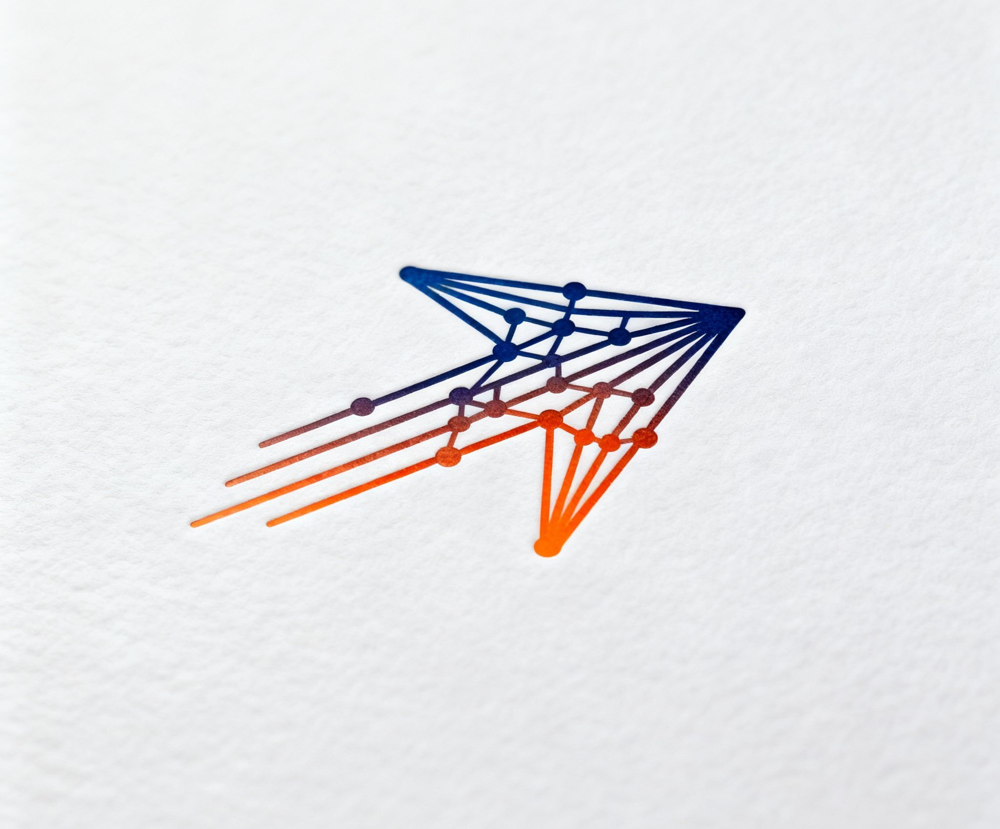

Project Team
Universitas Andalas
Multi-Agent System
CEPAT
Collaborative Emergency Planning and Action Tool
Faster, Structured Earthquake Response
0:00 – 0:20
Hello, we are Dimas, Zakky, and Trilen from Universitas Andalas. Today we present CEPAT — a multi-agent system designed to help BPBD respond to earthquakes faster, with clear workflows, reliable data, and human approval at every step.
Problem Statement
Current disaster-response workflows create dangerous gaps
1
Manual Data Gathering
Staff manually collect BMKG updates and search for news under extreme time pressure.
2
Slow Alert Drafting
Reports and alerts are written by hand, causing delays and inconsistent messaging.
3
Fragmented Coordination
Resource decisions are scattered with no single centralized source of truth.
4
No Audit Trail
Decisions are hard to review or justify — limited traceability and accountability.
5
Misinformation Risk
Unverified reports spread fast, making it harder to act on credible information.
0:20 – 0:55
After a major earthquake, responders need rapid, consistent decisions. But current workflows are often manual: staff gather official updates, search news, draft alerts, and coordinate resources under time pressure. This creates delays, inconsistent messaging, and limited traceability. Misinformation can spread quickly. CEPAT addresses these issues by automating early analysis while keeping humans firmly in control.
Methodology
Python · Flask · SQLite · Five coordinated agents that mirror real response stages
01
Monitoring
Agent
Continuously polls the official BMKG feed and stores verified earthquake events in the local database.
›
02
Intelligence
Agent
Collects related news from RSS sources and classifies each article: Valid, Hoax, or Unverified.
›
03
Analysis
Agent
Generates a structured situation report and assigns a risk level based on all available data.
›
04
Communication
Agent
Drafts alerts in multiple formats — public-facing messages and technical reports for responders.
›
05
Coordination
Agent
Proposes prioritized resource needs and a concrete action plan based on the situation report.
Flask Dashboard
Centralized output view
Approval Queue
Human review gate
Audit Log
Full decision trail
SQLite Database
Local — no cloud dependency
0:55 – 2:00
CEPAT is built in Python with a lightweight, modular architecture. Five coordinated agents reflect real response stages: (1) Monitoring polls BMKG; (2) Intelligence classifies news credibility; (3) Analysis generates a sitrep and risk level; (4) Communication drafts multi-format alerts; (5) Coordination proposes prioritized actions. All outputs appear in a Flask dashboard with an approval queue and audit log.
Results
Historical earthquake demo — complete pipeline in one automated flow
Automatically ingests official BMKG data
Gathers & classifies news by credibility
Produces structured sitrep with risk level
Drafts multi-format alerts for human approval
Generates prioritized coordination plan
2:00 – 2:40
In a historical earthquake demo scenario, CEPAT completes a full response pipeline in one automated flow. It ingests official data, gathers related reports, produces a situation report, drafts alerts, and proposes a prioritized coordination plan — reducing manual steps and centralizing information.
Discussion
Impact and design rationale
⚡ Speed
Automates data collection and first-pass analysis so responders can focus on decisions, not repetitive tasks.
🔍 Transparency
Every draft passes through a human approval queue. Every decision is recorded in an immutable audit log.
🏗 Deployability
Runs on standard local hardware with no cloud dependency — suitable for regional agencies with limited resources.
2:40 – 3:20
The main impact of CEPAT is speed with accountability. By automating data collection and first-pass analysis, responders can focus on decisions rather than repetitive tasks. Human approval and audit logging keep the system transparent and trustworthy. The architecture is lightweight and deployable on standard local infrastructure.

CEPAT
Collaborative Emergency
Planning and Action Tool
Our Team
Dimas · Zakky · Trilen · Rafi
Universitas Andalas
Key Takeaways
1
Faster Situational Awareness
BMKG data and classified news signals processed automatically in minutes.
2
Structured Coordination
A clear five-agent pipeline that mirrors real disaster response stages.
3
Reliable Communication
Multi-format alert drafts ready for human review and immediate release.
4
Human Oversight
Approval queue and audit log ensure trust and accountability at every step.
5
Anti-Misinformation
Automatic credibility classification helps prioritize verified information during crises.
3:20 – 3:50
To conclude, CEPAT delivers faster situational awareness, structured coordination, and reliable communication for earthquake response. It combines official data, news signals, and multi-agent analysis with strong human oversight. We believe CEPAT can strengthen local disaster response and reduce the impact of misinformation. Thank you for watching.